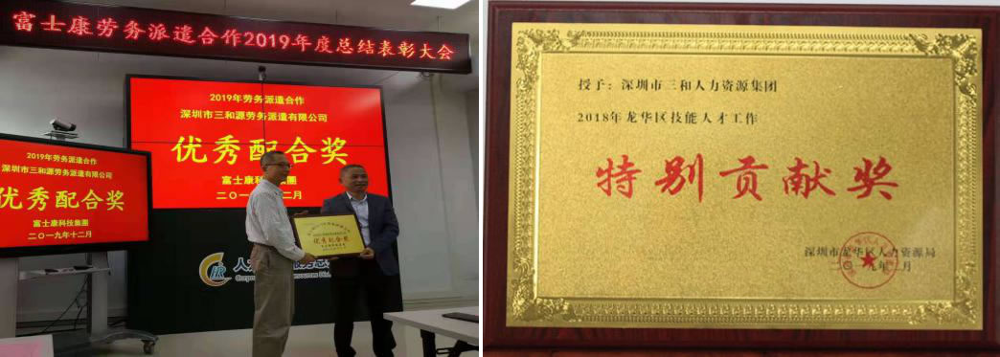
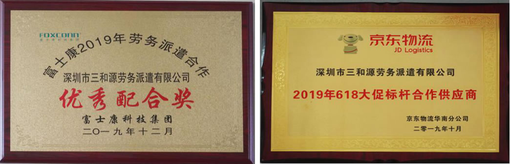

深圳市三和源劳务派遣有限公司
深圳市三和源劳务派遣有限公司成立于2009年，隶属于深圳市三和人力集团公司(以下简称三和人力)，相继成立了惠州市三和源人力资源服务有限公司、深圳市三和源劳务派遣东莞分公司、深圳市三和源劳务派遣龙岗分公司。三和源依托三和集团27年来在人力资源行业中的丰富经验和品牌效应，拥有管理团队100多人，迅速发展成为一家具有专业规范服务的劳务派遣连锁机构。公司具有专业人力资源管理能力和广泛的人才资源储备，累计派遣和外包各类员工已有10万余人。
成立至今，三和源为近百家企业提供专业人力资源派遣和外包服务，包括深圳国税、深圳地铁、招商局、福田人社局、龙岗区人力资源局、龙华区社建局、民政局、龙华街道工商联、坪山街道、布吉街道、南湾街道、坂田街道、光明新区凤凰社会事务办、光明街道、公明街道等政府单位，华为、富士康、联想、伟创力、日立环球、三星电子、中兴通讯、TCL、索尼、中集、比亚迪、艾美特、不凡帝、史丹利等国内外知名企业。涉及政府、IT、电子生产、电脑制造、手机通讯、食品加工、娱乐服务、物流管理、印刷等多个领域；业务范围覆盖珠三角，服务模式影响力辐射全国。
三和源劳务派遣下辖的分公司，业务范围不仅覆盖到深圳龙华新区、光明新区、龙岗区的现场招聘市场，同时辐射湖南、湖北、广西、河南等劳务大省，形成从学校—政府—人力资源同行的庞大供应链。三和源始终以“提供最适合的HR解决方案”为己任，在成为“中国最具影响力的专业人力资源服务商”的奋斗目标下，不断积累经验，逐步规范业务流程，完善各模块管理制度。同时，三和源利用自身科研优势，研发了具备工资管理、社保管理、客户管理、保险管理等综合功能的ERP系统，把高效便捷作为对客户最实在的承诺。

2016年，三和源先后与京东、顺丰、阿里、富士康等物流项目的战略合作，快递物流仓储项目外包实现了由华南区域市场向华东、华北乃至全国性的战略布点；以专业化、规核化、流程化、平台化的“四驱”动力加速发展，实现了以客户需求为导向的人力资源外包服务。

深圳市三和源劳务派遣有限公司在三和品牌影响力的推动下，三和源劳务派遣发展十分迅猛，为机关事业单位、学校、高新技术企业、金融服务业、制造业、电信业等数万家企事业单位提供现场与网络招聘、普工专送、派遣、人事外包、企业内训、企业人力资源发展方案、企业薪酬方案等服务，累计派遣员工达数十万余人，己成为深圳乃至全国具有一定影响和规模的人力资源专业服务机构。
一、集团规模
集团旗下三和人力、三和网络、三和源劳务派遣（龙华、龙岗、东莞、惠州分公司）、三和兴、三和隆、深汕人力、三和广告、三和培训学校、三合管理顾公司公司等十多家企业。
有四个实体人才招聘现场, 营业面积达近20000平方米，分布在深圳龙华区、龙岗区、光明区、深汕合作区，其中深汕人才市场与深汕投控合资成立。
拥有自建三和人力深圳总部大厦。
三和连锁招聘机构实习基地包括：华南师范大学，广东外语外贸大学、贵州大学、吉林财经大学、宁夏大学等三和实践基地及大学生创业基地。
二、企业文化
三和创始人 戴景华 先生毕业于贵州大学项目管理专业，获得硕士学位、现任中国就业促进会副会长、深圳市政协委员，汕尾市人大常委，华南师范大学创业学院导师，是一位自主创业、极具魄力和创新理念的知识型、实干型企业家，也是全国人力资源服务业的领军人物，曾荣获“中国就业改革发展三十年重要贡献奖”、“优秀政协委员”、“广东扶贫之星”。他结合现代商业环境和传统商道，打造“员工满意、顾客满意、社会满意”的“和”文化。
观念创新 管理创新 服务创新 —— 是我们的经营理念
不断创新 追求卓越 精益求精 —— 是我们的企业精神
员工满意 顾客满意 社会满意 —— 是我们的服务宗旨
客户和睦 企业和谐 员工和美 —— 是我们的企业文化
成为最具影响力的人力资源专业供应商和服务商，把人力资源服务视为爱心事业来经营 —— 是我们的奋斗目标
三、行业荣誉
2003年：深圳市五星级职业介绍服务单位；
2004-2009年，荣获“深圳市放心职介服务单位”称号
2006年-2014年：全国优秀职业介绍机构；全国优秀劳务品牌
2007年：荣获“深圳人力资源知名品牌”称号
2009年：荣获“中国就业改革发展三十年重要贡献奖”
2010年：被评为“广东省人力资源服务企业信用建设示范单位”
2012年：荣获“文明诚信经营单位”称号
2013年：汕尾市人民政府授予“爱心企业”称号
2015年：深圳市人力资源行业“领军企业奖”；
2016年：深圳市宝安区慈善百强企业；
2017年：三和荣获京东优秀供应商
2018年：三和再度荣获京东优秀供应商
2018年：成立三和人力集团慈善基金
2018年：龙华区技能人才工作“特别贡献奖”
2018年：2018年龙华区服务业百强企业
2019年：全国人力资源诚信服务示范机构
2019年：2019年度“富士康科技集团优秀配合奖”
四、服务案例
1、政府机关单位非编人员成功转派案例
三和源负责人及管理团队曾成功为招商局物流、深圳地铁、深圳国税、深圳检验检疫局机关服务中心、龙华社建局、民政局、福田人力资源局、有轨电车、深圳罗湖、消防大队、龙华城管、龙华街道、观澜街道、龙岗街道、坪山街道、布吉街道、公明街道、深圳罗湖国税等机关事业单位非编人员转为派遣人员，有丰富的转派经验。
2、大型上市公司和500强企业派遣案例
多年来，三和源管理团队为华为、招商局、万科、富士康、京东、顺丰、华润、沃尔玛、中兴通讯、迈瑞医疗、伟创力、不凡帝、南方中集等上市公司和500强企业提供派遣服务，有丰富的大型企业派遣经验。
3、高峰用工临时派遣案例
为了满足华为、富士康等制造业，京东、顺丰、准时达等物流仓储行业季节性用工需要，我们采取临时工外包方式，利用我司的现场招聘与外围渠道优势为其解决短期用工的难题，为企业节约人力成本压力，实现管理生产效率最大化。
4、派遣转外包案例
因国内派遣新规政策限制，已为我司不凡帝、史丹利百得、迈瑞等派遣客户逐步将生产线派遣员工转为产线辅助外包方式，帮助企业成功用工转型。
5、RPO招聘外包案例
近年来随着招聘渠道发展多样化，招聘形式也逐渐从单一走向多元化，从而促进了RPO招聘外包业务的飞速发展。我们为中集、三星、长城开发、伯恩、富士康、深南电路、中兴通讯、不凡帝、史丹利百得、迈瑞等客户提供了RPO招聘外包服务。
6、服务外包案例
服务外包是企业根据自身需要将人力资源六大模块的某一模块或多个模块的工作职能或管理工作外包给专业的人力资源公司操作，以降低企业人力资源管理成本，实现人力资源效率最大化，充分实现企业内部人力资源工作的战略性与规划性。我们连续五年为广铁集团提供春运检票、售票、安检等服务；为不凡帝、深南电路等企业提供入职离职服务、社保服务、宿舍管理等事务性工作，未来将逐渐发展到人力资源战略规划、制度设计与创新、流程整合、员工培训与发展、薪酬调查及方案设计等战略性人力资源工作。
五、发展历程
第一阶段：（1992-2002）飞速发展期。供需两旺的辉煌十年：以现场招聘会+劳务输送为主；
在改革开放的浪潮中，企业的增长性和扩张性用工需求，造就了三和人力供需两旺的辉煌十年。然而，市场初期的不规范，也让很多谋求短利的同行业者不顾行业声誉和诚信，采取很多不规范甚至违法手段破坏市场，也导致外界对整个行业的评价不良。十年来，在三和人力创办人戴景华先生的带领下：三和人力诚信经营，规模与业绩都取得一定的成绩。
第二阶段：（2003-2007）块速成长期。规模连锁的品牌五年，以现场+网络+寻聘多元的招聘服务为主；
三和在块速发展的同时，深度把握市场动态和需求，开辟了网络招聘与现场招聘相结合，对企业个性化的用工需求，精准的提供候选人，帮助企业完成前期的初试和筛选过程。
第三阶段：（2008-2011）稳固发展期。金融危机的阵痛三年，以劳务派遣+招聘外包服务为主；
2008年，金融危机爆发，制造业大量裁员，企业开始对用工有更强的风险意识，为了规避新劳务合同法的一系列用人单位风险，纷纷采用劳务派遣用工方式。三和源劳务派遣公司一经注册，就先后与政府单位、数十家大型上市公司、五百强企业缔结合作；中兴通讯、中集集团、伟创力、富士康、比亚迪等都相继成为三和的派遣事业伙伴。派遣业务一上轨，也实现了前半年开始赢利的新纪录，逐年发展壮大，到今天，拥有派遣员工一万多名，合作派遣单位数百家，拥有四家分公司，在全国各地设置网点的大型集团事业项目。
第四阶段：（2012-2019）产业转型背景下的人力资源服务转型发展期。以现场招聘+网络招聘+服务外包 +猎头+培训，一站式全程终身人力资源服务体系。
2012年，随着全球经济的变化，产业转型的大方向下，人力资源服务业也由原来的相对单一，发展到逐步多元，纵深化的方向。三和的服务与产品也于2013年起形成一条对于企业HR完善的服务链。涵盖了初级招聘的各种业态（现场+网络+代理+猎头），到参与过程管理的派遣和业务外包形态；再到员工在职提升，企业人力资源开发和职业生涯规划的全程终身发展体系。
搭建新平台，精准创新实现数据互联。多年来，三和以“人才是第一资源”的战略思维，在政府主管部门的引导下，充分发挥人力资源服务在人才配置中的积极作用，运用现代网络手段，APP数据分析，开展APP布点，结合三和人力慈善基金，免费提供给求职者交通费、吃住费，进厂一站式服务。开展全国人才输送工作，为社会输送就业岗位数以千万人次，年均服务企业数量达10万家。
三和自从2005年起，以“关爱外来务工者，建设和谐深圳”为题的“春风行动”，已成功举办数百场，并给予需要的求职者进行公益援助。并于2007年由三和公益基金发起，深圳特区报“新工作”特刊支持设立的首个为求这者提供紧急援助的“求职关爱基金”正式启动。2018年，三和人力集团慈善基金正式成立，三和始终怀着颗感恩之心，取之社会，用之社会的朴素理念，在广东、贵州、河南等扶贫救灾、助学助残，设立了5个“教育奖学金”用于扶持贫困地区地优秀学生，为社会培养人才。
2018年三和人力集团慈善基金挂牌成立，同时捐赠善款200万元。
为积极响应国家、省、市有关“精准扶贫”工作部署，更好帮助当地贫困劳动力就近及来深就业，集团开展劳务扶贫就业服务项目，以凤山驻点为核心、辐射东兰，开展当地就业服务活动，探索打造贫困劳动力人才培养、人才输送、服务两地的精准扶贫示范性基地，促进贫困县、贫困户脱贫脱困，为龙华区打造“制造业强区”提供有效人力输送，力求实现劳务协作互补双赢，营造龙凤齐翔的良好局面，三和充分发挥人力资源配置市场作用，大力开展多渠道、大面积、深入细致的就业帮扶工作，还把就业渠道深入城乡结合地及老少边贫地区，建立跨省劳务输送，与贵州、湖南、陕西、四川等劳动力富余的大省建立对接合作，在促进城乡统筹就业、平等就业工作中发挥了积极作用，使数万名农村劳动力实现了向非农产业转移，捐建广西凤山扶贫就业服务中心，为帮扶贫困山区就业困难群体解决就业问题做出了实质性的贡献。
人才是国家发展、国家强大的重要保障，实施人才强国，是中国近15年来最重要的国家战略之一。三和集团多年来，大力倡导和培养人才，为深圳创新发展的竞争力，为了完成一代又一代人的梦想，奋斗从不停止。我们的责任就是联动校政企，促进社会资源深度融合，为社会高速发展添砖加瓦，提出了校政企联动战略，是促进社会资源共享，促进学校、企业共赢发展的新模式，为高等职业教育转型发展提出了新出路和方向。